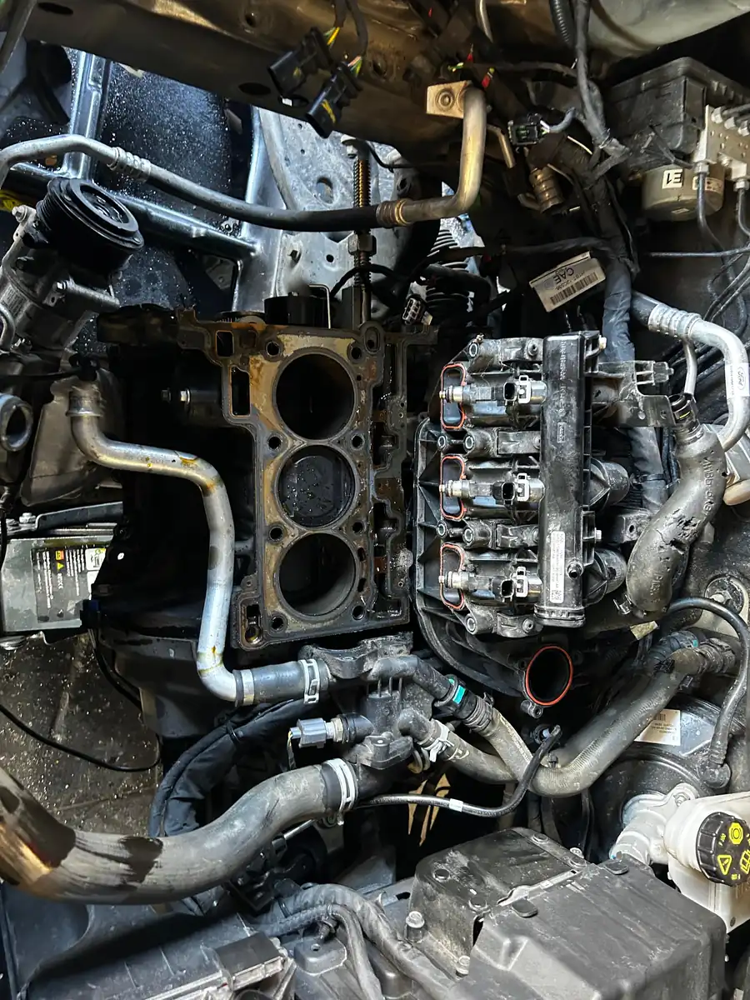
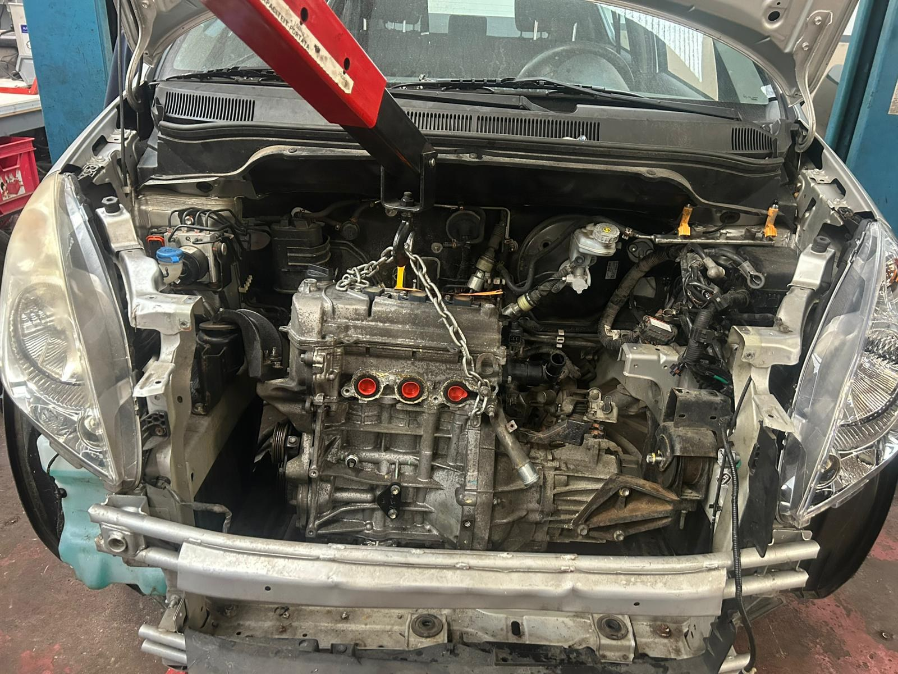

Le moteur tourne mal? Le turbo siffle? La boîte de vitesses craque? C'est exactement ce qu'on fait chez DMT AUTOGROUP à Zaventem. 15 ans d'expérience en mécanique lourde — moteurs, turbos, embrayages, boîtes de vitesses. On ouvre, on diagnostique, on répare. Toutes marques. Draait de motor slecht? Fluit de turbo? Kraakt de versnellingsbak? Dat is precies wat we doen bij DMT AUTOGROUP in Zaventem. 15 jaar ervaring in zware mechaniek — motoren, turbo's, koppelingen, versnellingsbakken.
Le turbo, c'est le coeur de la puissance de votre moteur diesel ou essence turbo. Quand il lâche, votre voiture perd toute sa force et peut même partir en mode dégradé. Dans notre atelier à Zaventem, on remplace les turbos, on installe des turbos neufs ou échange standard, et on vérifie tout le circuit d'alimentation en huile. On gère aussi les compresseurs de climatisation — si votre clim ne refroidit plus, c'est souvent le compresseur qui est en cause. De turbo is het hart van het vermogen van uw diesel- of turbobenzinemotor. Wanneer deze het begeeft, verliest uw auto al zijn kracht. In ons atelier in Zaventem vervangen we turbo's, installeren we nieuwe of ruil turbo's.

L'embrayage qui patine, la boîte qui craque, les vitesses qui passent mal — on voit ça tous les jours. Chez DMT AUTOGROUP, on démonte la boîte de vitesses, on inspecte tout : disque d'embrayage, butée, volant moteur, synchros. On vous explique ce qu'il faut changer et on le fait proprement. Manuelle ou automatique, on gère. Si vous venez de Machelen, Vilvoorde ou Sterrebeek, on est le mécanicien le plus proche pour ce genre de travaux. Een slippende koppeling, krakende versnellingsbak, moeilijk schakelen — we zien het elke dag. Bij DMT AUTOGROUP demonteren we de versnellingsbak en inspecteren alles: koppelingsschijf, druklager, vliegwiel, synchromesh.


Votre moteur consomme trop? Il manque de puissance? Le ralenti est instable? Un bon réglage moteur peut tout changer. Avec nos outils de diagnostic informatique, on analyse les paramètres moteur et on ajuste ce qu'il faut : injection, allumage, distribution. C'est de la mécanique de précision et c'est notre spécialité depuis 15 ans. Verbruikt uw motor te veel? Mist hij vermogen? Is het stationair onstabiel? Een goede motorafstelling kan alles veranderen. Met onze computerdiagnose tools analyseren we de motorparameters.
Du remplacement de joint de culasse à la réfection moteur complète, on fait de la mécanique lourde dans notre atelier à Zaventem. Chaîne de distribution, culasse, pistons, bielles — quand d'autres garages vous envoient chez le concessionnaire, nous on ouvre le moteur et on le répare. C'est un savoir-faire qui se perd, et c'est pour ça qu'on l'a gardé. Après une grosse réparation moteur, pensez à faire une vidange complète pour repartir sur de bonnes bases. Et si le moteur a souffert suite à un accident, notre atelier de carrosserie et peinture remet l'extérieur en état pendant qu'on s'occupe de la mécanique. Van het vervangen van een cilinderkoppakking tot een volledige motoroverhaul, we doen zwaar mechanisch werk in ons atelier in Zaventem. Distributieketting, cilinderkop, zuigers, drijfstangen. Is de motor beschadigd door een ongeval? Dan herstelt ons carrosserie- en lakwerk-atelier de buitenkant terwijl wij de mechaniek aanpakken.


Le voyant ABS qui reste allumé, c'est un problème de sécurité qu'il ne faut pas ignorer. Capteur de roue, module ABS, câblage — on diagnostique et on répare. On en profite souvent pour vérifier l'état de vos pneus aussi, car un capteur ABS défaillant peut masquer une usure irrégulière. En Belgique, un ABS défaillant peut aussi faire rater votre contrôle technique. Autant régler ça avant. Een ABS-lampje dat blijft branden is een veiligheidsprobleem dat je niet mag negeren. Wielsensor, ABS-module, bedrading — we diagnosticeren en herstellen. We controleren dan ook meteen de staat van uw banden, want een defecte ABS-sensor kan ongelijkmatige slijtage verbergen.
Le prix varie selon le modèle de votre voiture — un embrayage de Polo ne coûte pas la même chose qu'un embrayage de BMW X5. Chez DMT AUTOGROUP à Zaventem, on vous fait un devis précis avant de démonter quoi que ce soit. Avec 15 ans d'expérience, on répare les embrayages tous les jours. De prijs varieert per automodel — een koppeling van een Polo kost niet hetzelfde als die van een BMW X5. Bij DMT AUTOGROUP in Zaventem geven we u een nauwkeurige offerte voordat we iets demonteren. Met 15 jaar ervaring herstellen we dagelijks koppelingen.
Une perte de puissance peut venir de plein de choses : turbo défaillant, filtre bouché, injecteurs sales, problème de distribution. Passez chez nous à Zaventem, on diagnostique la cause exacte avec nos outils professionnels et on vous explique ce qu'il faut réparer. Pas de devinettes. Vermogensverlies kan veel oorzaken hebben: defecte turbo, verstopt filter, vuile injectoren, distributieprobleem. Kom langs bij ons in Zaventem, we diagnosticeren de exacte oorzaak met onze professionele tools en leggen uit wat er hersteld moet worden. Geen giswerk.
Ça dépend de l'état du turbo. Parfois c'est un problème d'alimentation en huile qu'on peut réparer sans changer le turbo. Si le turbo est mort, on le remplace par un turbo neuf ou échange standard. On diagnostique d'abord et on vous donne les options dans notre atelier à Zaventem. Dat hangt af van de staat van de turbo. Soms is het een probleem met de olievoeding dat we kunnen herstellen zonder de turbo te vervangen. Als de turbo defect is, vervangen we hem door een nieuwe of een ruil-turbo. We diagnosticeren eerst en geven u de opties in ons atelier in Zaventem.
Ça dépend du travail. Un joint de culasse, c'est 1 à 2 jours. Une réfection moteur complète, comptez 3 à 5 jours. On vous donne toujours un délai clair avant de commencer et on vous tient au courant de l'avancement. Dat hangt af van het werk. Een cilinderkoppakking is 1 tot 2 dagen. Een volledige motoroverhaul, reken op 3 tot 5 dagen. We geven u altijd een duidelijke termijn vooraf en houden u op de hoogte van de voortgang.
Oui, on travaille sur les boîtes automatiques dans notre atelier à Zaventem — vidange de boîte auto, remplacement de mécatronique, réparation de convertisseur. Avec 15 ans d'expérience, on gère les boîtes manuelles et automatiques de toutes marques. Ja, we werken aan automatische versnellingsbakken in ons atelier in Zaventem — olieverversing automaat, vervanging mechatronica, herstelling koppelomvormer. Met 15 jaar ervaring behandelen we manuele en automatische versnellingsbakken van alle merken.
Lundi — Vendredi · 08:30 — 18:00
Mechelsesteenweg 270, 1933 ZaventemMaandag — Vrijdag · 08:30 — 18:00
Mechelsesteenweg 270, 1933 Zaventem